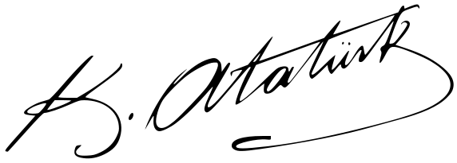

“Dünyada her şey için,
medeniyet için,
hayat için,
muvaffakiyet için
en hakiki mürşit
ilimdir, fendir.”
Mustafa Kemal Atatürk
Samsun, 22 Eylül 1924
Bilimi rehber edinen
bir meslek olarak…
…her sesi bir hayata
taşımaya devam ediyoruz.
29 EKİM 1923
Cumhuriyetimizin
103. yılı kutlu olsun.
Saygı, minnet ve özlemle.

ODİ · SESİN YOLU